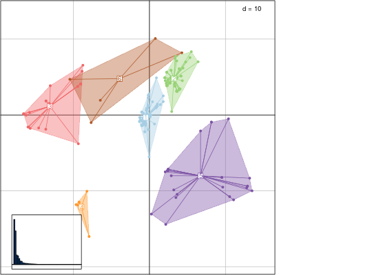

Identify clusters of similar trees
This function uses hierarchical clustering on principal components output by treespace to identify groups of similar trees. Clustering relies on hclust, using Ward's method by default.
findGroves(x, method = "treeVec", nf = NULL, clustering = "ward.D2", nclust = NULL, ...)
Arguments
- x
- an object of the class multiPhylo or the output of the function
treespace - method
- (ignored if x is from
treespace) this specifies a function which outputs the summary of a tree in the form of a vector. Defaults totreeVec. - nf
- (ignored if x is from
treespace) the number of principal components to retain - clustering
- a character string indicating the clustering method to be used; defaults to Ward's method; see argument
methodin?hclustfor more details. - nclust
- an integer indicating the number of clusters to find; if not provided, an interactive process based on cutoff threshold selection is used.
- ...
- further arguments to be passed to
treespace
Value
A list containing:
- groups: a factor defining groups of trees
- treespace: the output of treespace
See also
plotGroves to display results
Examples
if(require("adegenet") && require("adegraphics")){ ## load data data(woodmiceTrees) ## run findGroves: treespace+clustering res <- findGroves(woodmiceTrees, nf=5, nclust=6) ## plot results on first 2 axes PCs <- res$treespace$pco$li s.class(PCs, fac=res$groups, col=funky(6)) ## using plotGroves plotGroves(res) }